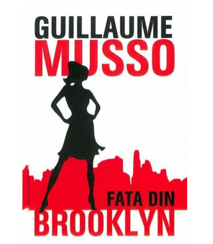
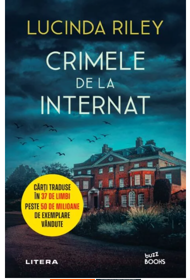
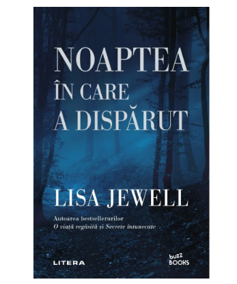

Bine ati venit la Bookworld!
"Unele cărți trebuie gustate, altele devorate, dar numai unele trebuie mestecate și digerate în întregime." Sir Francis Bacon
Acesta este un blog de recenzii de carte care reuneste carti dintre genurile mele favorite si in acelasi timp, total opuse: crima, misterul, repectiv romanele istorice, de dragoste. Incerc sa imi mentin, pe cat posibil obiectivitate, si imi doresc ca review-urile mele sa ajunga la cat mai multi pasionati de lectura asa ca mine!
Cele mai recente review-uri
Mai jos puteti regasi cele mai recente review-uri in functie de ordinea postarii lor. Cu speranta ca acestea va vor inspira, va urez spor la lecturat!
Fata din Brooklyn - Guillaume Musso
Fata din tren este un thriller construit în jurul vieții a doi oameni care ar trebui să se căsătorească în trei săptămâni, dar o serie de evenimente nefericite rup povestea lor frumoasă și îi despart pentru o vreme... Vezi mai mult
Crimele de la internat-Lucinda Riley

Hitul internațional Crimele de la internat a lui Lucinda Riley este o carte captivantă, care s-a vândut în milioane de exemplare.Moartea neașteptată a unui student de la Fleet House at St Stephen's, un mic internat privat din zona rurală Norfolk, este un incident tulburător pe care directorul este dornic să îl caracterizeze drept un accident tragic....Vezi mai mult
Noaptea în care a dispărut-Lisa Jewell

Noaptea în care a dispărut este un thriller despre o tânără mamă de 19 ani și iubitul ei, care dispar într-o seară de întâlnire.După ce au petrecut...Vezi mai mult
Ce se afla pe lista mea
- Hipnotizatorul- Lars Kepler
- Tura De Noapte- Michael Connelly
- Fata Dispărută-Gillian Flynn
- Alb Letal-Robert Galbraith
- Un apartament la Paris-Guillaume Musso